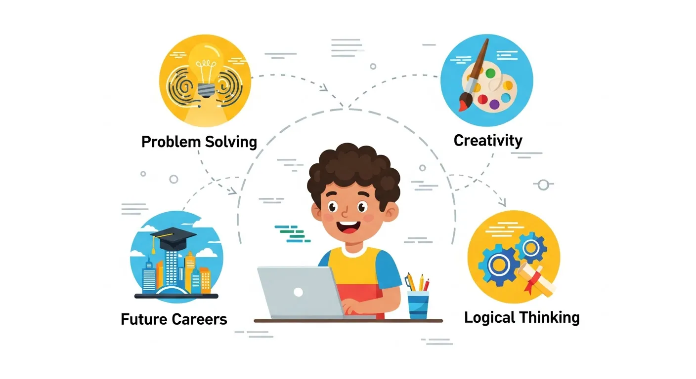

למה ללמד ילדים תכנות? 🚀
7 סיבות שישכנעו אתכם

"הילד שלי בן 9, זה לא מוקדם מדי לתכנות?" — זו השאלה הכי נפוצה שאנחנו שומעים מהורים. אחרי שש שנים של הוראת תכנות לאלפי ילדים בדרך ההייטק, התשובה שלנו ברורה: לא, זה בדיוק הגיל הנכון. ואם כבר — רוב ההורים מתחרטים שלא התחילו מוקדם יותר.
בעולם שבו טכנולוגיה נמצאת בכל פינה — מהטלפון שביד ועד למכונית שבחניה, מ-ChatGPT ועד לרובוט שמנקה את הבית — ההבנה של "איך דברים עובדים" הפכה למיומנות חיונית. ותכנות? זו הדרך הטובה ביותר לרכוש את ההבנה הזו.
במאמר הזה נפרט 7 סיבות מבוססות מחקר שיסבירו למה לימוד תכנות לילדים הוא אחת ההשקעות הכי טובות שתוכלו לעשות — ונוסיף מדריך מעשי שיעזור לכם להתחיל.
🧠 1. פיתוח חשיבה לוגית ופתרון בעיות
תכנות הוא בעצם אמנות של פירוק בעיות גדולות לבעיות קטנות. כשילד לומד לתכנת, הוא לומד לחשוב בצורה מסודרת ושיטתית — מה שנקרא "חשיבה מחשובית" (Computational Thinking).
חשיבה מחשובית כוללת ארבעה מרכיבים עיקריים:
- פירוק (Decomposition) — לפרק בעיה גדולה לחלקים קטנים ופתירים
- זיהוי דפוסים (Pattern Recognition) — לראות מה חוזר על עצמו ולהשתמש בזה
- הפשטה (Abstraction) — להתעלם מפרטים לא רלוונטיים ולהתמקד בעיקר
- חשיבה אלגוריתמית — לתכנן רצף צעדים שפותר את הבעיה
מחקרים מראים שילדים שלומדים תכנות משפרים את יכולות פתרון הבעיות שלהם ב-16% בממוצע, גם בתחומים שאינם קשורים למחשבים כלל. מחקר של אוניברסיטת סטנפורד מ-2024 מצא שתלמידים שלמדו עם כלי AI מותאם אישית שיפרו את הישגיהם ב-34%.
🎨 2. יצירתיות ללא גבולות
רבים חושבים שתכנות זה משהו "יבש" ומשעמם. ההיפך הוא הנכון! תכנות הוא כלי יצירתי מדהים — אולי הכלי היצירתי החזק ביותר שקיים היום. הילד יכול ליצור משחק, אנימציה, אפליקציה, אתר אינטרנט, רובוט — כל מה שהוא יכול לדמיין.
במיינקראפט למשל, ילדים בונים עולמות שלמים ומתכנתים התנהגויות מורכבות — פירמידות אוטומטיות, חדרי בריחה עם לוגיקה, ושרתים שלמים עם plugins שהם כתבו. ברובלוקס הם יוצרים משחקים ששחקנים אחרים מכל העולם משחקים בהם — וחלק מהמשחקים של ילדים ב-Roblox הגיעו למאות ואפילו אלפי שחקנים.
אחד התלמידים שלנו, איתן בן 12, בנה משחק רובלוקס שהגיע ל-500 שחקנים פעילים. הוא לא רק למד תכנות — הוא למד עיצוב, חווית משתמש, שיווק, ואפילו כלכלה (כי המשחק שלו מרוויח Robux).
💪 3. חוסן ולמידה מטעויות
בתכנות, טעויות הן חלק בלתי נפרד מהתהליך. הקוד לא עובד? צריך למצוא את הבאג ולתקן אותו. זה מלמד ילדים שטעויות זה בסדר — וחשוב מזה, שאפשר לתקן אותן.
היכולת להתמודד עם תסכול, לא לוותר, ולנסות שוב — אלה מיומנויות חיים קריטיות שתכנות מלמד בצורה טבעית. בניגוד למבחן בבית ספר שבו טעות = ציון נמוך, בתכנות טעות = הזדמנות ללמוד. הילד מקבל feedback מיידי מהמחשב, מתקן, ומנסה שוב — בלי שיפוט.
ד"ר קרול דווק מסטנפורד קוראת לזה "Growth Mindset" — האמונה שיכולות אפשר לפתח. תכנות מלמד את זה בצורה הכי טבעית שיש.
💡 הידעתם?
מתכנתים מקצועיים מבלים כ-50% מזמנם בחיפוש ותיקון באגים. גם Elon Musk וגם Mark Zuckerberg עדיין כותבים קוד עם באגים. זה חלק טבעי ובריא מהתהליך!
📚 4. שיפור בביצועים הלימודיים
מחקרים מצאו קשר ישיר בין לימוד תכנות לשיפור במתמטיקה, מדעים, ואפילו בשפות. למה? כי תכנות מחזק את אותם "שרירים מנטליים" — חשיבה מופשטת, זיהוי דפוסים, והבנת מערכות מורכבות.
הנה כמה ממצאים מחקריים:
- מתמטיקה: ילדים שלמדו תכנות שיפרו ציונים במתמטיקה ב-15-20% (מחקר MIT, 2023)
- קריאה והבנה: תכנות מחייב קריאה מדויקת של הוראות — מיומנות שמשתפרת ומשפיעה על מקצועות אחרים
- אנגלית: כל שפות התכנות כתובות באנגלית, כך שילדים נחשפים למונחים באנגלית באופן טבעי
- מדעים: תכנות מלמד את השיטה המדעית — נסה, מדוד, תקן, נסה שוב
בדרך ההייטק אנחנו רואים את זה כל יום: ילדים שנכנסים "חלשים במתמטיקה" ואחרי כמה חודשים של תכנות ההורים מדווחים על שיפור גם בציונים בבית הספר.
🌍 5. שפה בינלאומית
קוד זה שפה אוניברסלית. ילד ישראלי יכול ליצור פרויקט עם ילד מיפן, ברזיל או גרמניה — כי כולם מדברים את אותה שפה: Python, JavaScript, Lua.
זה פותח דלתות לשיתופי פעולה בינלאומיים, קהילות אונליין, ואפשרויות עתידיות שלא היו קיימות בעבר. ב-Roblox למשל, ילדים ישראליים מפתחים משחקים ששחקנים מכל העולם משחקים בהם — זה ניסיון בינלאומי בגיל 12.
בנוסף, הקהילות האונליין (GitHub, Stack Overflow, Discord) מאפשרות לילדים לשאול שאלות, לקבל עזרה, ולתרום לפרויקטים — הכל באנגלית, מה שמשפר את רמת האנגלית שלהם בצורה טבעית.
💼 6. הכנה לשוק העבודה של המחר
לפי הערכות, 65% מילדי היום יעבדו במקצועות שעדיין לא קיימים. אבל דבר אחד בטוח — רובם המכריע יצטרכו להבין טכנולוגיה ברמה כלשהי.
גם אם הילד שלכם לא יהפוך למתכנת, ההבנה של איך תוכנה עובדת תעזור לו בכל תחום:
- רפואה: AI ולמידת מכונה משנים את הדיאגנוסטיקה — רופא שמבין קוד יש לו יתרון
- משפטים: Legal Tech דורש הבנה טכנולוגית — חוזים חכמים, ניתוח מסמכים אוטומטי
- עיצוב: מעצבים שיודעים CSS ו-JavaScript מרוויחים 40% יותר
- כלכלה: FinTech ו-Data Science הם מהתחומים הצומחים ביותר
- חינוך: מורים שמבינים AI הם המורים של המחר
ואם כבר מדברים על כסף — משכורת ממוצעת של מתכנת בישראל היא מעל 30,000 ₪ בחודש, ובהייטק שכר ההתחלה הוא כ-20,000 ₪. זה לא הסיבה העיקרית ללמד ילדים תכנות, אבל זה בהחלט בונוס.
😊 7. זה פשוט כיף!
בסוף, הסיבה הכי חשובה: ילדים נהנים מזה! כשהלמידה מגיעה דרך משחקים שהם אוהבים — מיינקראפט, רובלוקס, יצירת אתרים — זה לא מרגיש כמו "לימודים".
הילד יושב שעות על הפרויקט שלו, לא בגלל שמישהו אמר לו, אלא כי הוא רוצה לראות את התוצאה. זו הלמידה הכי אפקטיבית שיש — למידה מתוך מוטיבציה פנימית.
ה-פיתוח משחקים הוא דוגמה מצוינת: הילד רוצה לבנות משחק כמו אלה שהוא משחק. הוא מתחיל ללמוד תכנות כדי להגשים את החלום הזה — ובדרך רוכש מיומנויות שישמשו אותו לכל החיים.
מאיזה גיל להתחיל? מדריך לפי גילאים
הגיל הטוב ביותר להתחיל הוא... עכשיו. אבל באיזה גיל הכי טוב להתחיל? הנה מדריך מעשי:
| גיל | שפה/כלי מומלץ | מה ילמדו | קורס בדרך ההייטק |
|---|---|---|---|
| 7-9 | סקראץ' | חשיבה לוגית, לולאות, תנאים דרך בלוקים ויזואליים | תכנות בסקראץ' |
| 8-11 | מיינקראפט | בנייה, פקודות, חשיבה מרחבית | מיינקראפט: בניית עולמות |
| 10-13 | JavaScript / Lua | שפות תכנות אמיתיות, פונקציות, אובייקטים | רובלוקס + Lua |
| 12+ | Python / Java | פיתוח מתקדם, OOP, פרויקטים מורכבים | Python: פיתוח משחקים |
| 13+ | AI + Web | בינה מלאכותית, בניית אתרים, בוטים | פיתוח אתרים + AI |
הדבר הכי חשוב? שהילד יהנה. אם הוא אוהב מיינקראפט — יש קורסי תכנות במיינקראפט. אוהב רובלוקס? יש קורסים לזה. אוהב ליצור אתרים? גם לזה יש פתרון.
השוואת שפות תכנות לילדים
לא בטוחים איזו שפה מתאימה? הנה השוואה מהירה:
- סקראץ' (Scratch): ויזואלית, קלה להתחלה, מושלמת לגיל 7-10. חסרון: מוגבלת ביכולות מתקדמות.
- Python: השפה הכי פופולרית בעולם. קלה לקריאה, חזקה מאוד. מגיל 10+.
- JavaScript: השפה של האינטרנט. מיידית — כותבים קוד ורואים תוצאה בדפדפן. מגיל 10+.
- Lua: השפה של רובלוקס. אם הילד אוהב רובלוקס — זו הדרך המושלמת להתחיל.
- Java: שפה מתקדמת יותר. מושלמת לפיתוח Minecraft Plugins. מגיל 12+.
💡 קורס תכנות לילדים
מגיל 7 • ללא ניסיון קודם • גישה לנצח
שאלות נפוצות של הורים
האם תכנות מתאים לילד שלא אוהב מתמטיקה?
בהחלט! תכנות דרך משחקים (מיינקראפט, רובלוקס) לא דורש ידע במתמטיקה. ההיפך — ילדים שהתחילו לתכנת דיווחו על שיפור במתמטיקה כי הם פתאום הבינו למה הם צריכים את זה.
כמה זמן לוקח עד שרואים תוצאות?
כבר בשיעור הראשון הילד ייצור משהו — משחק קטן, אנימציה, או עולם במיינקראפט. אחרי חודש-חודשיים של למידה עקבית, ההורים מדווחים על שינוי בחשיבה ובגישה ללמידה.
זה לא עוד זמן מסך?
יש הבדל ענק בין צריכת מסך פסיבית (צפייה ב-TikTok) לבין יצירה פעילה (כתיבת קוד). כשילד מתכנת, המוח שלו פעיל — הוא חושב, מתכנן, פותר בעיות ויוצר. זה כמו ההבדל בין לצפות בטלוויזיה לבין לכתוב ספר.
האם קורס אונליין מספיק טוב?
כן, אם הוא מלווה בהדרכה אישית. בדרך ההייטק כל תלמיד מקבל מדריך אישי — מהנדס תוכנה אמיתי שזמין בוואטסאפ לכל שאלה. היתרון של אונליין: הילד לומד מהבית, בקצב שלו, ויכול לחזור על החומר.
מה המחיר של קורס תכנות לילדים?
בדרך ההייטק יש קורסים דיגיטליים החל מ-497₪ לקורס מלא (גישה לנצח), ושיעורים פרטיים החל מ-156₪ לשיעור. לצפייה בחבילות →
לסיכום
לימוד תכנות לילדים זה לא רק על "להפוך למתכנת". זה על לתת לילד כלים לחשוב טוב יותר, ליצור, להתמודד עם אתגרים, ולהבין את העולם שמסביב. זה מפתח חשיבה לוגית, יצירתיות, חוסן, ומיומנויות חברתיות.
וכן, זה גם נותן יתרון משמעותי לעתיד — בין אם הילד יבחר בקריירה טכנולוגית ובין אם לא. בעולם שבו בינה מלאכותית משנה את כל התעשיות, ההבנה של טכנולוגיה היא לא מותרות — היא הכרח.
השאלה היא לא "למה ללמד ילדים תכנות?" — השאלה היא "למה לחכות?"
📚 קריאה נוספת:
באיזה גיל להתחיל ללמוד תכנות? ·
סקראץ' לילדים ·
Python לילדים ·
איך ללמד ילד תכנות? ·
פיתוח משחקים לילדים